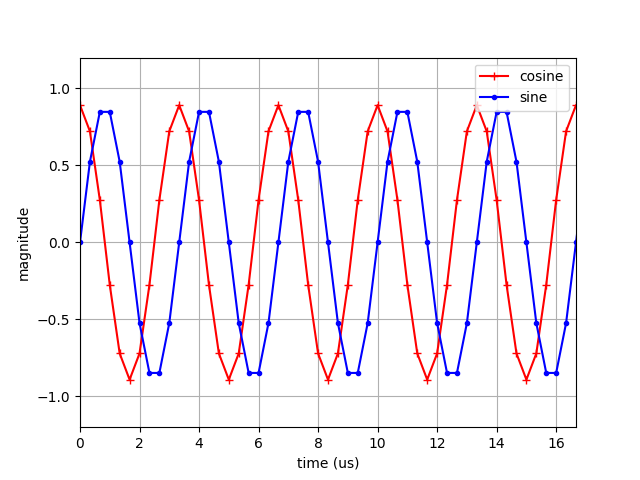
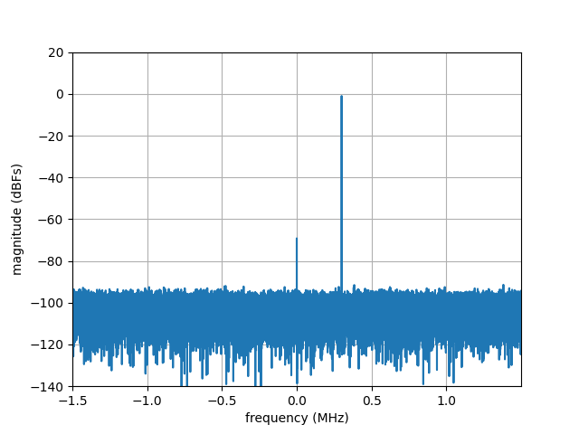
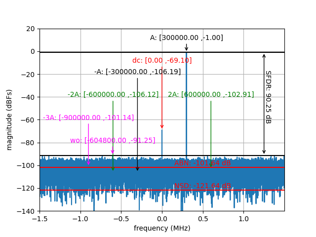

Spectral Analysis
In this tutorial, we will use Genalyzer to conduct spectral analysis of a waveform. The waveform we analyze will be a 300 KHz complex sinusoidal tone sampled at 3 MSPS. The only impairment in this waveform will be quantization noise. At the end of this tutorial, the reader will have gained an understanding on how to utilize Genalyzer to compute various RF performance metrics such as SFDR, FSNR, SNR, NSD etc.
The workflow we follow in this tutorial is generally what is to be followed to use Genalyzer for spectral analysis. It consists of three stages shown in the diagram below.
graph LR;
A[Generate/Import Waveform] --> B[Compute FFT];
B -->C1[Configure Spectral Analysis];
subgraph SA[Spectral Analysis]
C1[Configure] -->C2[Run];
end
style SA fill:#ffffff
We first generate (or import) a waveform to be analyzed, compute its FFT, and finally, calculate various performance metrics by running spectral analysis. In this tutorial, we will generate the tone waveform using Genalyzer. Please refer to the spectral-analysis example Python script to follow the discussion on this page.
Tone Generation
graph LR;
A[Generate/Import Waveform] --> B[Compute FFT];
B -->C1[Configure Spectral Analysis];
subgraph SA[Spectral Analysis]
C1[Configure] -->C2[Run];
end
style SA fill:#ffffff
style A fill:#9fa4fc
Genalyzer supports sine, cosine, ramp, and Gaussian random waveforms. It also contains a waveform analysis utility to summarize a waveform, generated or otherwise. For example, in the spectral-analysis example Python script, to generate a cosine-waveform, we called cos() as follows:
# signal configuration
npts = 30000 # number of points in the signal
fs = 3e6 # sample-rate of the data
freq = 300000 # tone frequency
phase = 0.0 # tone phase
ampl_dbfs = -1.0 # amplitude of the tone in dBFS
ampl = (fsr / 2) * 10 ** (ampl_dbfs / 20) # amplitude of the tone in linear scale
# generate signal for analysis
wf = gn.cos(npts, fs, ampl, freq, phase)
Note that we also used quantize() to convert a floating-point waveform to fixed-point. Its usage is as follows:
# quantization settings
fsr = 2.0 # full-scale range of I/Q components of the complex tone
qres = 12 # data resolution
qnoise = 10 ** (qnoise_dbfs / 20) # quantizer noise in linear scale
code_fmt = gn.CodeFormat.TWOS_COMPLEMENT # integer data format
# quantize signal
qwf = gn.quantize(wf, fsr, qres, qnoise, code_fmt)
A time-domain plot of the complex-sinusoidal tone for which we compute FFT in the next step is shown below for reference.

Time-domain plot of a 300 KHz complex sinusoidal tone sampled at 3 MSPS.
Compute FFT
graph LR;
A[Generate/Import Waveform] --> B[Compute FFT];
B -->C1[Configure Spectral Analysis];
subgraph SA[Spectral Analysis]
C1[Configure] -->C2[Run];
end
style SA fill:#ffffff
style B fill:#9fa4fc
Next, we compute FFT of the sinusoidal tone since spectral analysis of a waveform is in essence an analysis of its FFT.
Genalyzer’s fft() supports several usecases depending on whether the samples are represented in floating- or fixed-point, and on whether the samples are represented as complex-valued, or interleaved I/Q, or split into I and Q streams. In the spectral-analysis example Python script, we compute the complex, floating-point FFT of a complex, fixed-point input waveform represented as separate I and Q streams in the following manner:
# signal configuration
npts = 30000 # number of points in the signal
fs = 3e6 # sample-rate of the data
freq = 300000 # tone frequency
phase = 0.0 # tone phase
ampl_dbfs = -1.0 # amplitude of the tone in dBFS
qnoise_dbfs = -60.0 # quantizer noise in dBFS
fsr = 2.0 # full-scale range of I/Q components of the complex tone
ampl = (fsr / 2) * 10 ** (ampl_dbfs / 20) # amplitude of the tone in linear scale
qnoise = 10 ** (qnoise_dbfs / 20) # quantizer noise in linear scale
qres = 12 # data resolution
code_fmt = gn.CodeFormat.TWOS_COMPLEMENT # integer data format
# FFT configuration
navg = 1 # number of FFT averages
nfft = int(npts/navg) # FFT-order
window = gn.Window.NO_WINDOW # window function to apply
axis_type = gn.FreqAxisType.DC_CENTER # axis type
# generate signal for analysis
awfi = gn.cos(npts, fs, ampl, freq, phase)
awfq = gn.sin(npts, fs, ampl, freq, phase)
qwfi = gn.quantize(awfi, fsr, qres, qnoise, code_fmt)
qwfq = gn.quantize(awfq, fsr, qres, qnoise, code_fmt)
# compute FFT
fft_cplx = gn.fft(qwfi, qwfq, qres, navg, nfft, window, code_fmt)
More details can be found on the API page for fft().
Note
Genalyzer supports two fixed-point data formats: offset binary and two’s-complement. See here.
Note
Genalyzer supports three window types that can be applied to the signal prior to computing FFT: Blackman-Harris, Hanning, and rectangular. See here.
Important
Genalyzer doesn’t support an overlap window between different snapshots that are averaged to generate the FFT. As a result, fft() expects the number of complex-valued samples in the input to be equal to the product of the number of averages and the FFT order.
See also
Genalyzer’s fft() computes FFT for complex-valued data only. To compute FFT for real-valued data, use rfft(). Additional details here.
The FFT plot of the complex-sinusoidal tone in our working example is shown below for reference.

FFT plot of a 300 KHz complex sinusoidal tone sampled at 3 MSPS.
Run Spectral Analysis
graph LR;
A[Generate/Import Waveform] --> B[Compute FFT];
B -->C1[Configure Spectral Analysis];
subgraph SA[Spectral Analysis]
C1[Configure] -->C2[Run];
end
style SA fill:#9fa4fc
Conducting spectral analysis using Genalyzer involves two steps: configuration and analysis.
Configure Genalyzer
graph LR;
A[Generate/Import Waveform] --> B[Compute FFT];
B -->C1[Configure Spectral Analysis];
subgraph SA[Spectral Analysis]
C1[Configure] -->C2[Run];
end
style C1 fill:#9fa4fc
style SA fill:#ffffff
We configure Genalyzer for spectral analysis by creating a test followed by associating components to this test.
Create a test
In the spectral-analysis example Python script, to create a test, we called fa_create() as follows:
# Fourier analysis configuration
test_label = "fa"
gn.fa_create(test_label)
The test_label string is key to all further configuration, and for computing and retrieving the metrics.
Aside
Under the hood, Genalyzer adds a key-value pair to a static map container to manage the metrics to be computed. The key is the string argument passed through fa_create(), and the mapped value is a shared-pointer to an instance of fourier_analysis class. This key is then used to further configure Genalyzer, and to compute and retrieve the metrics through fourier_analysis class. The intent behind using a map container is to be easily able to associate multiple keys to different snapshots of the data being analyzed and to have the metrics for each of those snapshots available.
Add a component to a test
The next step is to identify a tone, give it a label, tag it with a component tag, and add it to the test being run. In this working example, we will consider only the signal tone for illustration purposes. We pick the label, A for the signal component and associate it with the test labeled fa from above. To do this, call fa_max_tone() as follows:
# Fourier analysis configuration
test_label = "fa"
gn.fa_create(test_label)
signal_component_label = 'A'
gn.fa_max_tone(test_label, signal_component_label, gn.FaCompTag.SIGNAL, ssb_fund)
As the name indicates, fa_max_tone() above interprets the tone with the highest magnitude as the signal component. For a more general way of informing Genalyzer to link a certain tone with a tag, use fa_fixed_tone().
Note
Genalyzer supports several tags for Fourier analysis. See here.
The number of single-side bins (SSBs) for a component is an important configuration step, and it will be explained in sufficient detail in another subsection.
Run Spectral Analysis
graph LR;
A[Generate/Import Waveform] --> B[Compute FFT];
B -->C1[Configure Spectral Analysis];
subgraph SA[Spectral Analysis]
C1[Configure] -->C2[Run];
end
style C2 fill:#9fa4fc
style SA fill:#ffffff
In the spectral-analyis example Python script, FFT analysis is run by the following line:
# Fourier analysis execution
results = gn.fft_analysis(test_label, fft_cplx, nfft, axis_type)
See more details on fft_analysis() here.
Note
The enumerations for frequency-axis type are here.
The Python script prints two tables and a dictionary to the console output. With the help of the tables, we will first see how Genalyzer identifies signal tone, its harmonics (and other components), their locations, and their magnitudes. Next, we will look at the dictionary of key-value pairs that fft_analysis() returns. It contains all the necessary information gathered by Genalyzer to compute various performance metrics. Towards the end of this discussion, we consider one metric, snr and verify how it is computed by Genalyzer.
Tone labels
The first table we look at is the labels table.
annots[“labels”] from console output
+------------------+--------------------+-------------------+
| frequency (Hz) | magnitude (dBFs) | component label |
+==================+====================+===================+
| 0 | -69.1449 | dc |
+------------------+--------------------+-------------------+
| 300000 | -1.00002 | A |
+------------------+--------------------+-------------------+
| -300000 | -96.918 | -A |
+------------------+--------------------+-------------------+
| 600000 | -102.544 | 2A |
+------------------+--------------------+-------------------+
| -600000 | -99.6542 | -2A |
+------------------+--------------------+-------------------+
| -900000 | -104.414 | -3A |
+------------------+--------------------+-------------------+
| 1.1641e+06 | -91.308 | wo |
+------------------+--------------------+-------------------+
Notice that this table shows 7 frequencies, their magnitudes, and their labels. In addition to the auto-configured dc component, with the help of the manually configured signal component, Genalyzer has identified 4 others: the image, two second-order harmonics, and one third-order harmonic. We also see a wo (worst-other) component which, as the name indicates, is the component of the highest magnitude excluding the ones listed so far. By default, Genalyzer identifies harmonics upto the 6th order. In the spectral-analysis example Python script, we set the the number of harmonics to take into account to 3 with the following lines:
num_harmonics = 3 # number of harmonics to analyze
...
gn.fa_hd(test_label, num_harmonics)
Note
For odd-ordered harmonics, 3rd, 5th, and so on, Genalyzer considers only the maximum of the harmonic and its image, whereas for an even-ordered harmonic, both are taken into account.
Tone boxes
Next, we look at the tone_boxes table.
annots[“tone_boxes”] from console output
+--------------------------+--------------+
| box left boundary (Hz) | width (Hz) |
+==========================+==============+
| -50 | 100 |
+--------------------------+--------------+
| 299950 | 100 |
+--------------------------+--------------+
| -300050 | 100 |
+--------------------------+--------------+
| 599950 | 100 |
+--------------------------+--------------+
| -600050 | 100 |
+--------------------------+--------------+
| -900050 | 100 |
+--------------------------+--------------+
| 401050 | 100 |
+--------------------------+--------------+
From this table, we see that each of the 7 components spans a width of 100 Hz. This value equals sample-rate divided by the FFT order we chose in the working example. Because the tone is coherently sampled and we chose the sample-rate to be an integer multiple of the FFT-order, all the power corresponding to a component is located in exactly one bin. This is the reason why, in this example, we set the number of single-side bins (SSBs) for every component to 0. So, Genalyzer takes into account the magnitude value corresponding to exactly one bin (and 0 bins on either side) as that component’s contribution in various metrics computed. In a subsequent example, we consider the case when it becomes necessary to set the number of SSBs to a value greater than 0.
Caution
The choice of the number of single-side bins (SSBs) is important when the signal is not coherently sampled and when the sample-rate is not an integer multiple of the FFT-order.
Spectral analysis results
Finally, we take a brief look at the results dictionary. This dictionary can be thought of as a comprehensive summary gathered by Genalyzer for the snapshot of the sinusoidal tone we wished to analyze.
The results dictionary printed to the console output is shown below. Note that since a random quantization noise is added to the signal, the console output will be different when you run the Python script.
results
+----------------+
results dictionary
+----------------+
{'-2A:ffinal': -600000.0,
'-2A:freq': -600000.0,
'-2A:fwavg': 0.0,
'-2A:i1': 24000.0,
'-2A:i2': 24000.0,
'-2A:inband': 1.0,
'-2A:mag': 1.0406152385295209e-05,
'-2A:mag_dbc': -98.65417884167778,
'-2A:mag_dbfs': -99.654196373704,
'-2A:nbins': 1.0,
'-2A:orderindex': 4.0,
'-2A:phase': -0.9269628993478889,
'-2A:phase_c': -0.9269652814760975,
'-2A:tag': 2.0,
'-3A:ffinal': -900000.0,
'-3A:freq': -900000.0,
'-3A:fwavg': 0.0,
'-3A:i1': 21000.0,
'-3A:i2': 21000.0,
'-3A:inband': 1.0,
'-3A:mag': 6.016169853525572e-06,
'-3A:mag_dbc': -103.41358068555886,
'-3A:mag_dbfs': -104.41359821758508,
'-3A:nbins': 1.0,
'-3A:orderindex': 5.0,
'-3A:phase': 2.094523867798375,
'-3A:phase_c': 2.0945214856701666,
'-3A:tag': 2.0,
'-A:ffinal': -300000.0,
'-A:freq': -300000.0,
'-A:fwavg': 0.0,
'-A:i1': 27000.0,
'-A:i2': 27000.0,
'-A:inband': 1.0,
'-A:mag': 1.4259315029324203e-05,
'-A:mag_dbc': -95.91800918925517,
'-A:mag_dbfs': -96.9180267212814,
'-A:nbins': 1.0,
'-A:orderindex': 2.0,
'-A:phase': -1.0654410825386686,
'-A:phase_c': -1.0654434646668773,
'-A:tag': 2.0,
'2A:ffinal': 600000.0,
'2A:freq': 600000.0,
'2A:fwavg': 0.0,
'2A:i1': 6000.0,
'2A:i2': 6000.0,
'2A:inband': 1.0,
'2A:mag': 7.461346264425087e-06,
'2A:mag_dbc': -101.54363856607857,
'2A:mag_dbfs': -102.54365609810476,
'2A:nbins': 1.0,
'2A:orderindex': 3.0,
'2A:phase': 1.1796502560980227,
'2A:phase_c': 1.179647873969814,
'2A:tag': 2.0,
'A:ffinal': 300000.0,
'A:freq': 300000.0,
'A:fwavg': 0.0,
'A:i1': 3000.0,
'A:i2': 3000.0,
'A:inband': 1.0,
'A:mag': 0.8912491391908985,
'A:mag_dbc': 0.0,
'A:mag_dbfs': -1.0000175320262066,
'A:nbins': 1.0,
'A:orderindex': 1.0,
'A:phase': 2.3821282085798884e-06,
'A:phase_c': 0.0,
'A:tag': 1.0,
'ab_i1': 0.0,
'ab_i2': 29999.0,
'ab_nbins': 30000.0,
'ab_rss': 0.891250360126791,
'ab_width': 3000000.0,
'abn': -101.6440166036007,
'analysistype': 1.0,
'carrierindex': 1.0,
'clk_nbins': 0.0,
'clk_rss': 0.0,
'datasize': 30000.0,
'dc:ffinal': 0.0,
'dc:freq': 0.0,
'dc:fwavg': 0.0,
'dc:i1': 0.0,
'dc:i2': 0.0,
'dc:inband': 1.0,
'dc:mag': 0.00034894329171477126,
'dc:mag_dbc': -68.14488539563568,
'dc:mag_dbfs': -69.1449029276619,
'dc:nbins': 1.0,
'dc:orderindex': 0.0,
'dc:phase': -2.3326100677671495,
'dc:phase_c': -2.332612449895358,
'dc:tag': 0.0,
'dist_nbins': 4.0,
'dist_rss': 2.0086862879892827e-05,
'fbin': 100.0,
'fdata': 3000000.0,
'fsample': 3000000.0,
'fshift': 0.0,
'fsnr': 56.873672732238376,
'hd_nbins': 4.0,
'hd_rss': 2.0086862879892827e-05,
'ilgt_nbins': 0.0,
'ilgt_rss': 0.0,
'ilos_nbins': 0.0,
'ilos_rss': 0.0,
'ilv_nbins': 0.0,
'ilv_rss': 0.0,
'imd_nbins': 0.0,
'imd_rss': 0.0,
'maxspurindex': 6.0,
'nad_nbins': 29998.0,
'nad_rss': 0.0014333723144579046,
'nfft': 30000.0,
'noise_nbins': 29994.0,
'noise_rss': 0.0014332315618189736,
'nsd': -121.64488527943499,
'sfdr': 90.30795361676347,
'signal_nbins': 1.0,
'signal_rss': 0.8912491391908985,
'signaltype': 1.0,
'sinad': 55.87280223137394,
'snr': 55.87365520021216,
'thd_nbins': 4.0,
'thd_rss': 2.0086862879892827e-05,
'userdist_nbins': 0.0,
'userdist_rss': 0.0,
'wo:ffinal': 1164100.0,
'wo:freq': 1164100.0,
'wo:fwavg': 0.0,
'wo:i1': 11641.0,
'wo:i2': 11641.0,
'wo:inband': 1.0,
'wo:mag': 2.7202037974481932e-05,
'wo:mag_dbc': -90.30795361676347,
'wo:mag_dbfs': -91.30797114878968,
'wo:nbins': 1.0,
'wo:orderindex': 6.0,
'wo:phase': -2.1560142655481678,
'wo:phase_c': -2.1560166476763762,
'wo:tag': 8.0}
From the results dictionary, we see a number of key-value pairs that are computed by Genalyzer. Among them, 7 sets of key-value pairs corresponding to the 7 components listed in the third column of the labels table in the console output above have the following format:
{TONEKEY}:ffinal : Tone final frequency (Hz)
{TONEKEY}:freq : Tone frequency (Hz)
{TONEKEY}:fwavg : Tone weighted-average frequency (Hz)
{TONEKEY}:i1 : Tone first index
{TONEKEY}:i2 : Tone last index
{TONEKEY}:inband : 1: tone is in-band; 0: tone is out-of-band
{TONEKEY}:mag : Tone magnitude
{TONEKEY}:mag_dbc : Tone magnitude relative to carrier (dBc)
{TONEKEY}:mag_dbfs : Tone magnitude relative to full-scale (dBFS)
{TONEKEY}:nbins : Tone number of bins
{TONEKEY}:orderindex : Tone order index
{TONEKEY}:phase : Tone phase (rad)
{TONEKEY}:phase_c : Tone phase relative to carrier (rad)
{TONEKEY}:tag : Tone tag
For example, the key-value pairs in the above format for -A component are as follows:
'-A:ffinal': -300000.0,
'-A:freq': -300000.0,
'-A:fwavg': 0.0,
'-A:i1': 27000.0,
'-A:i2': 27000.0,
'-A:inband': 1.0,
'-A:mag': 1.0513032226581935e-05,
'-A:mag_dbc': -98.56536672200804,
'-A:mag_dbfs': -99.56544008601296,
'-A:nbins': 1.0,
'-A:orderindex': 2.0,
'-A:phase': 2.2048368960072615,
'-A:phase_c': 2.2048362928010907,
'-A:tag': 2.0,
which provide all the relevant information concerning -A component and how its contribution to the metrics is computed. More details concerning the key-value pairs in the results dictionary are available here.
In this manner, Genalyzer collates the information concerning all the components to account for, calculates the various performance metrics, and logs them to the results dictionary. To give an example of how genalyzer computes sfdr, consider the following key-value pair from the results dictionary:
'noise_nbins': 29994.0,
'noise_rss': 0.0014332315618189736,
which indicate that aside from 6 components (A, -A, 2A, -2A, -3A, and wo), all other bins have been accumulated and the root-sum-square value was computed to be 0.0014332315618189736 (-56.8737 dB). In our working example, we set the signal amplitude of the tone to be -1 dBFS (confirmed by 'signal_rss': 0.8912491391908985). Hence, we can verify that SNR (dB) = 20*log10(signal_rss/noise_rss) = 55.87365520021216 dB, which matches the value in the console output above. In a similar manner, we can verify several other metrics as shown below:
SINAD (dB) = 20*log10(signal_rss/nad_rss)FSNR (dB) = 20*log10(1.0/noise_rss)SFDR (dB) = 20*log10(signal_rss/wo:mag)NSD (dB) = 10*log10(noise_rss*noise_rss/ab_width)ABN (dB) = 10*log10(noise_ss/noise_nbins)
Please refer to the documentation page for fft_analysis() for further details.
In summary, the magnitude spectrum plot for the working example considered so far, with DC, signal, and harmonic components labeled, is shown below.

Magnitude spectrum of the FFT showing signal, harmonic, DC, and WO components.